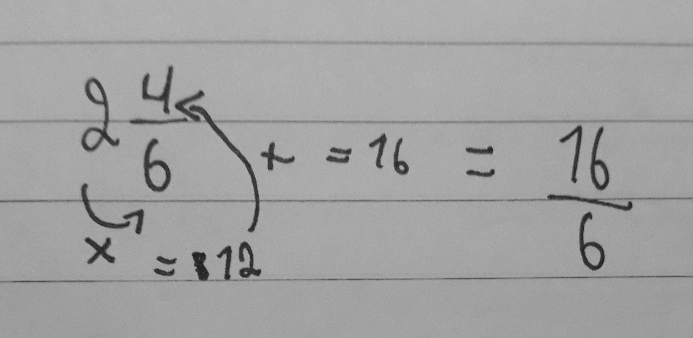

Para transformar um número misto para fração imprópria temos que multiplicar o número inteiro com o denominador, em seguida somar com o numerador. Segue um exemplo:

Para transformar de fração imprópria para número misto temos que fazer a divisão do numerador pelo denominador.
Então o resultado é:
6 é o denominador
4 é o numerador
2 é o número inteiro
Para determinar o gráfico de uma função é preciso no mínimo dois pontos.
Para achá-los, temos que zerar a função, para descobrir a variável x.
Por exemplo a função y=2x+5:

Pronto, já achamos o x. Agora é fácil: como o ponto onde corta o eixo y é o b, então é só colocar o valor do b no lugar do y.
Esses são os pontos onde a reta corta o eixo x e o eixo y:
x=2,5 e y=5